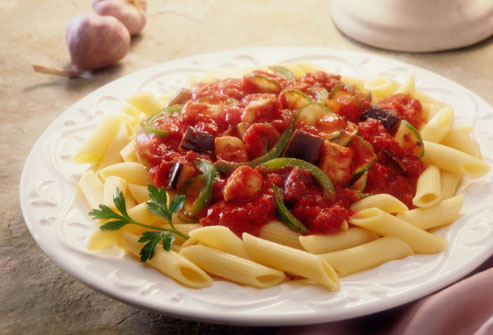

Pasta Pasta with Extra Pasta Sauce
1 hr & 30 min
77% Success Rate

Ingredients List
#
Ingredient
Swap
1
Pepper
2
Boxes of Pasta
1
Teaspoon of Salt
4
Cans of Tomato Sauce
10
Cups of Water
1
Onion
1
Avocado
1
Cup of Cheese
Instructions
Step
Instructions
1
Fill a pot with 10 cups of water and teaspoon of salt
2
Set water to boil
3
While the water is boiling, chop up peppers and onions
4
When the water is bubbling heavily, add 2 boxes of pasta to water
5
Let pasta cook for 10 minutes, stirring occasionally
6
On the side, heat oil in a pan
7
Once the oil has heated, add onions to pan
8
Stir often. After a few minutes, when the onions start to change color, stop heating onions.
9
After 10 minutes, turn off stove and drain the pasta
10
Once the steam from the pasta has stopped, add peppers, onions and tomato sauce. Top it off with shredded cheese.
Did it work?
Thank you! Your vote has been recorded and will help improve the quality of recipes on this site.